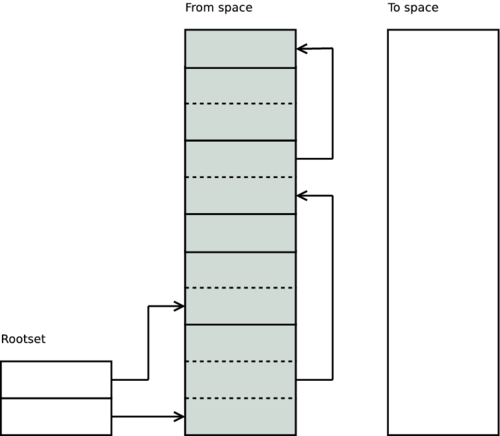
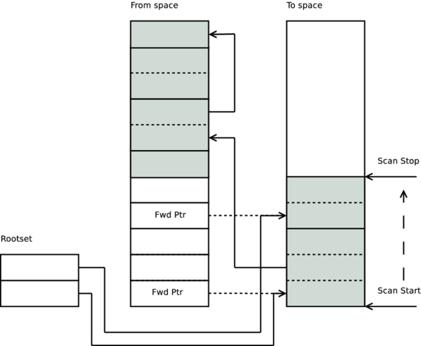
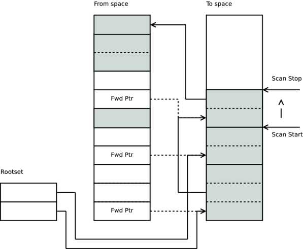
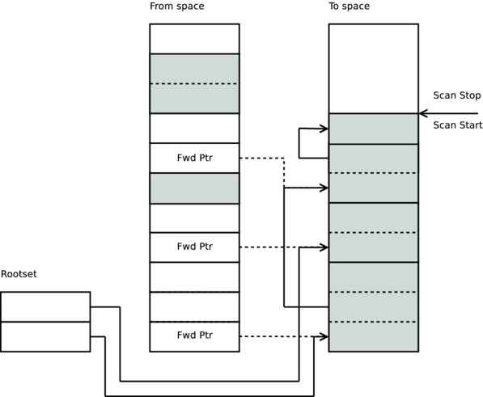
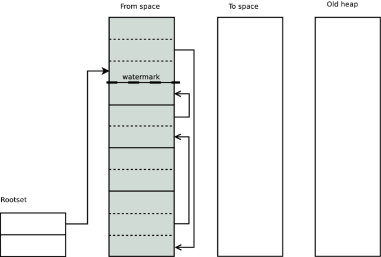
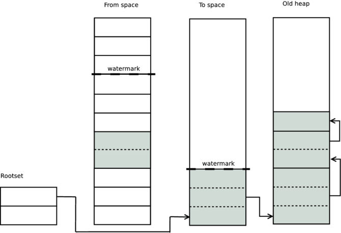

Erlang Garbage Collector
View SourceErlang manages dynamic memory with a tracing garbage collector. More precisely a per process generational semi-space copying collector using Cheney's copy collection algorithm together with a global large object space. (See C. J. Cheney in References.)
Overview
Each Erlang process has its own stack and heap which are allocated in the same memory block and grow towards each other. When the stack and the heap meet, the garbage collector is triggered and memory is reclaimed. If not enough memory was reclaimed, the heap will grow.
Creating Data
Terms are created on the heap by evaluating expressions. There are two major types of terms: immediate terms which require no heap space (small integers, atoms, pids, port ids etc) and cons or boxed terms (tuple, big num, binaries etc) that do require heap space. Immediate terms do not need any heap space because they are embedded into the containing structure.
Let's look at an example that returns a tuple with the newly created data.
data(Foo) ->
Cons = [42|Foo],
Literal = {text, "hello world!"},
{tag, Cons, Literal}.In this example we first create a new cons cell with an integer and a tuple with some text. Then a tuple of size three wrapping the other values with an atom tag is created and returned.
On the heap tuples require a word size for each of its elements as well as for the header. Cons cells always require two words. Adding these things together, we get seven words for the tuples and 26 words for the cons cells. The string "hello world!" is a list of cons cells and thus requires 24 words. The atom tag and the integer 42 do not require any additional heap memory since it is an immediate. Adding all the terms together, the heap space required in this example should be 33 words.
Compiling this code to beam assembly (erlc -S) shows exactly what is happening.
...
{test_heap,6,1}.
{put_list,{integer,42},{x,0},{x,1}}.
{put_tuple,3,{x,0}}.
{put,{atom,tag}}.
{put,{x,1}}.
{put,{literal,{text,"hello world!"}}}.
return.Looking at the assembler code we can see three things: The heap requirement in this function turns out to be only six words, as seen by the {test_heap,6,1} instruction. All the allocations are combined to a single instruction. The bulk of the data {text, "hello world!"} is a literal. Literals, sometimes referred to as constants, are not allocated in the function since they are a part of the module and allocated at load time.
If there is not enough space available on the heap to satisfy the test_heap instructions request for memory, then a garbage collection is initiated. It may happen immediately in the test_heap instruction, or it can be delayed until a later time depending on what state the process is in. If the garbage collection is delayed, any memory needed will be allocated in heap fragments. Heap fragments are extra memory blocks that are a part of the young heap, but are not allocated in the contiguous area where terms normally reside. See The young heap for more details.
The collector
Erlang has a copying semi-space garbage collector. This means that when doing a garbage collection, the terms are copied from one distinct area, called the from space, to a new clean area, called the to space. The collector starts by scanning the root-set (stack, registers, etc).

It follows all the pointers from the root-set to the heap and copies each term word by word to the to space.
After the header word has been copied a move marker is destructively placed in it pointing to the term in the to space. Any other term that points to the already moved term will see this move marker and copy the referring pointer instead. For example, if the have the following Erlang code:
foo(Arg) ->
T = {test, Arg},
{wrapper, T, T, T}.Only one copy of T exists on the heap and during the garbage collection only the first time T is encountered will it be copied.

After all terms referenced by the root-set have been copied, the collector scans the to space and copies all terms that these terms reference. When scanning, the collector steps through each term on the to space and any term still referencing the from space is copied over to the to space. Some terms contain non-term data (the payload of a on heap binary for instance). When encountered by the collector, these values are simply skipped.

Every term object we can reach is copied to the to space and stored on top of the scan stop line, and then the scan stop is moved to the end of the last object.

When scan stop marker catches up to the scan start marker, the garbage collection is done. At this point we can deallocate the entire from space and therefore reclaim the entire young heap.
Generational Garbage Collection
In addition to the collection algorithm described above, the Erlang garbage collector also provides generational garbage collection. An additional heap, called the old heap, is used where the long lived data is stored. The original heap is called the young heap, or sometimes the allocation heap.
With this in mind we can look at the Erlang's garbage collection again. During the copy stage anything that should be copied to the young to space is instead copied to the old to space if it is below the high-watermark.

The high-watermark is placed where the previous garbage collection (described in Overview) ended and we have introduced a new area called the old heap. When doing the normal garbage collection pass, any term that is located below the high-watermark is copied to the old to space instead of the young.

In the next garbage collection, any pointers to the old heap will be ignored and not scanned. This way the garbage collector does not have to scan the long-lived terms.
Generational garbage collection aims to increase performance at the expense of memory. This is achieved because only the young, smaller, heap is considered in most garbage collections.
The generational hypothesis predicts that most terms tend to die young (see D. Ungar in References), and for an immutable language such as Erlang, young terms die even faster than in other languages. So for most usage patterns the data in the new heap will die very soon after it is allocated. This is good because it limits the amount of data copied to the old heap and also because the garbage collection algorithm used is proportional to the amount of live data on the heap.
One critical issue to note here is that any term on the young heap can reference terms on the old heap but no term on the old heap may refer to a term on the young heap. This is due to the nature of the copy algorithm. Anything referenced by an old heap term is not included in the reference tree, root-set and its followers, and hence is not copied. If it was, the data would be lost, fire and brimstone would rise to cover the earth. Fortunately, this comes naturally for Erlang because the terms are immutable and thus there can be no pointers modified on the old heap to point to the young heap.
To reclaim data from the old heap, both young and old heaps are included during the collection and copied to a common to space. Both the from space of the young and old heap are then deallocated and the procedure will start over from the beginning. This type of garbage collection is called a full sweep and is triggered when the size of the area under the high-watermark is larger than the size of the free area of the old heap. It can also be triggered by doing a manual call to erlang:garbage_collect(), or by running into the young garbage collection limit set by [spawn_opt(fun(),{fullsweep_after, N}]) where N is the number of young garbage collections to do before forcing a garbage collection of both young and old heap.
The young heap
The young heap, or the allocation heap, consists of the stack and heap as described in the Overview. However, it also includes any heap fragments that are attached to the heap. All of the heap fragments are considered to be above the high-watermark and part of the young generation. Heap fragments contain terms that either did not fit on the heap, or were created by another process and then attached to the heap. For instance if the bif binary_to_term/1 created a term which does not fit on the current heap without doing a garbage collection, it will create a heap-fragment for the term and then schedule a garbage collection for later. Also if a message is sent to the process, the payload may be placed in a heap-fragment and that fragment is added to young heap when the message is matched in a receive clause.
This procedure differs from how it worked prior to Erlang/OTP 19.0. Before 19.0, only a contiguous memory block where the young heap and stack resided was considered to be part of the young heap. Heap fragments and messages were immediately copied into the young heap before they could be inspected by the Erlang program. The behaviour introduced in 19.0 is superior in many ways - most significantly it reduces the number of necessary copy operations and the root set for garbage collection.
Sizing the heap
As mentioned in the Overview the size of the heap grows to accommodate more data. Heaps grow in two stages, first a variation of the Fibonacci sequence is used starting at 233 words. Then at about 1 mega words the heap only grows in 20% increments.
There are two occasions when the young heap grows:
- if the total size of the heap + message and heap fragments exceeds the current heap size.
- if after a fullsweep, the total amount of live objects is greater than 75%.
There are two occasions when the young heap is shrunk:
- if after a young collection, the total amount of live objects is less than 25% of the heap and the young heap is "big"
- if after a fullsweep, the total amount of live objects is less than 25% of the heap.
The old heap is always one step ahead in the heap growth stages than the young heap.
Literals
When garbage collecting a heap (young or old) all literals are left in place and not copied. To figure out if a term should be copied or not when doing a garbage collection the following pseudo code is used:
if (erts_is_literal(ptr) || (on_old_heap(ptr) && !fullsweep)) {
/* literal or non fullsweep - do not copy */
} else {
copy(ptr);
}The erts_is_literal check works differently on different architectures and operating systems.
On 64 bit systems that allow mapping of unreserved virtual memory areas (most operating systems except Windows), an area of size 1 GB (by default) is mapped and then all literals are placed within that area. Then all that has to be done to determine if something is a literal or not is two quick pointer checks. This system relies on the fact that a memory page that has not been touched yet does not take any actual space. So even if 1 GB of virtual memory is mapped, only the memory which is actually needed for literals is allocated in ram. The size of the literal area is configurable through the +MIscs erts_alloc option.
On 32 bit systems, there is not enough virtual memory space to allocate 1 GB for just literals, so instead small 256 KB sized literal regions are created on demand and a card mark bit-array of the entire 32 bit memory space is then used to determine if a term is a literal or not. Since the total memory space is only 32 bits, the card mark bit-array is only 256 words large. On a 64 bit system the same bit-array would have to be 1 tera words large, so this technique is only viable on 32 bit systems. Doing lookups in the array is a little more expensive then just doing the pointer checks that can be done in 64 bit systems, but not extremely so.
On 64 bit windows, on which erts_alloc cannot do unreserved virtual memory mappings, a special tag within the Erlang term object is used to determine if something is a literal or not. This is very cheap, however, the tag is only available on 64 bit machines, and it is possible to do a great deal of other nice optimizations with this tag in the future (like for instance a more compact list implementation) so it is not used on operating systems where it is not needed.
This behaviour is different from how it worked prior to Erlang/OTP 19.0. Before 19.0 the literal check was done by checking if the pointer pointed to the young or old heap block. If it did not, then it was considered a literal. This lead to considerable overhead and strange memory usage scenarios, so it was removed in 19.0.
Binary heap
The binary heap works as a large object space for binary terms that are greater than 64 bytes (from now on called off-heap binaries). The binary heap is reference counted and a pointer to the off-heap binary is stored on the process heap. To keep track of when to decrement the reference counter of the off-heap binary, a linked list (the MSO - mark and sweep object list) containing funs and externals as well as off-heap binaries is woven through the heap. After a garbage collection is done, the MSO list is swept and any off-heap binary that does not have a move marker written into the header words has its reference decremented and is potentially freed.
All items in the MSO list are ordered by the time they were added to the process heap, so when doing a minor garbage collection, the MSO sweeper only has to sweep until it encounters an off-heap binary that is on the old heap.
Virtual Binary heap
Each process has a virtual binary heap associated with it that has the size of all the current off-heap binaries that the process has references to. The virtual binary heap also has a limit and grows and shrinks depending on how off-heap binaries are used by the process. The same growth and shrink mechanisms are used for the binary heap and for the term heap, so first a Fibonacci like series and then 20% growth.
The virtual binary heap exists in order to trigger garbage collections earlier when potentially there is a very large amount of off-heap binary data that could be reclaimed. This approach does not catch all problems with binary memory not being released soon enough, but it does catch a lot of them.
Messages
Messages can become a part of the process heap at different times. This depends on how the process is configured.
We can configure the behaviour of each process using process_flag(message_queue_data, off_heap | on_heap) or we can set a default for all processes at start using the option +hmqd.
What do these different configurations do and when should we use them? Let's start by going through what happens when one Erlang process sends a message to another. The sending process needs to do a couple of things:
- calculate how large the message to be sent is
- allocate enough space to fit the entire message
- copy the message payload
- allocate a message container with some meta data
- insert the message container in the receiver process' message queue
The process flag message_queue_data, of the receiver process, controls the message allocating strategy of the sender process in step 2 and also how the message data is treated by the garbage collector.
The procedure above is different from how it worked prior to 19.0. Before 19.0 there was no configuration option, the behaviour was always very similar to how the on_heap option is in 19.0.
Message allocating strategies
If set to on_heap, the sending process will first attempt to allocate the space for the message directly on the young heap block of the receiving process.
This is not always possible as it requires taking the main lock of the receiving process. The main lock is also held when the process is executing. The possibility for a lock conflict is thus likely in an intensely collaborating system.
If the sending process cannot acquire the main lock, a heap fragment is instead created for the message and the message payload is copied onto that.
With the off_heap option the sender process always creates heap fragments for messages sent to that process.
There are a bunch of different tradeoffs that come into play when trying to figure out which of the strategies you want to use.
Using off_heap may seem like a nice way to get a more scalable system as you get very little contention on the main locks, however, allocating a heap fragment is more expensive than allocating on the heap of the receiving process. So if it is very unlikely that contention will occur, it is more efficient to try to allocate the message directly on the receiving process' heap.
Using on_heap will force all messages to be part of on the young heap which will increase the amount of data that the garbage collector has to move. So if a garbage collection is triggered while processing a large amount of messages, they will be copied to the young heap. This in turn will lead to that the messages will quickly be promoted to the old heap and thus increase its size. This may be good or bad depending on exactly what the process does. A large old heap means that the young heap will also be larger, which in turn means that less garbage collections will be triggered while processing the message queue. This will temporarily increase the throughput of the process at the cost of more memory usage. However, if after all the messages have been consumed the process enters a state where a lot less messages are being received. Then it may be a long time before the next fullsweep garbage collection happens and the messages that are on the old heap will be there until that happens. So while on_heap is potentially faster than the other modes, it uses more memory for a longer time. This mode is the legacy mode which is almost how the message queue was handled before Erlang/OTP 19.0.
Which one of these strategies is best depends a lot on what the process is doing and how it interacts with other processes. So, as always, profile the application and see how it behaves with the different options.
References
C. J. Cheney. A nonrecursive list compacting algorithm. Commun. ACM, 13(11):677–678, Nov. 1970.
D. Ungar. Generation scavenging: A non-disruptive high performance storage reclamation algorithm. SIGSOFT Softw. Eng. Notes, 9(3):157–167, Apr. 1984.